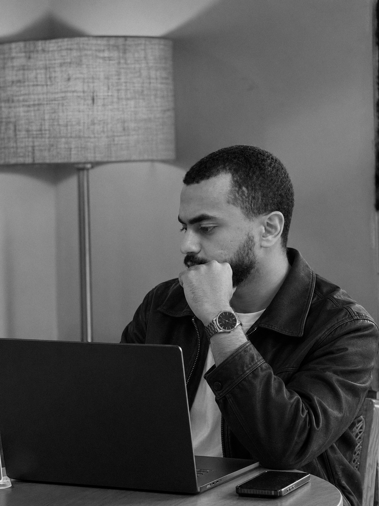

Anas Mahmoud — Senior Graphic Designer & Creative Visual Problem Solver
Senior Graphic Designer.
AI Image & Video Creator.
Connecting strategy, identity
and a little creative instinct.
Good design catches the eye.
Thoughtful design makes
you feel something.
I turn brand stories into visual identities, campaigns and digital experiences — bringing strategic thinking and hands-on craft to every detail.
WORK,
WITH INTENT.
Showing 6 projects
Brand identity, art direction and AI visuals.

A thinker.
A maker.
A visual
problem solver.
I’m a Senior Graphic Designer based in Egypt. My work connects brand strategy with visual storytelling, from the first insight to the final image.
I work across identities, campaigns and digital design. My AI image and video workflow moves from moodboards and studio photography to final assets, with a focus on editorial lifestyle visuals for brands and products.
Download my CV ↓01Brand strategy & identity
Positioning, logo design, visual systems and brand guidelines. A coherent visual language shaped around what a brand stands for and who it needs to reach.
02Campaign art direction
Concept development, moodboards, composition and visual storytelling across campaigns, product imagery and social media.
03AI visual development
AI-assisted image and video development, using structured, descriptive and negative prompts with deliberate lighting, lens and composition choices.
04Digital & UI design
Website visuals, interface concepts and Figma prototypes that use hierarchy to guide attention and make the next step clear.
Experience
shapes the eye.
- United States
- United Arab Emirates
- Saudi Arabia
- Egypt
- Germany
Photoshop · Illustrator · Figma
Magnific Space · AI image & video tools
Creative strategy · Typography
Aug 2025 — PresentMy Little HomeSenior Graphic Designer · Full-time, remoteKSA
Visual development across product imagery, website visuals and AI-driven campaigns for the Saudi market. An editorial lifestyle approach connects moodboards and studio photography with final campaign assets.
Feb — May 2025Nova Foods Industries GroupGraphic Designer · Contract, remote
Led visual direction for social media design, shaping the work around the target audience.
Oct 2024 — Jan 2025ANA Media HubGraphic Designer · Freelance, remoteUAE
Visual storytelling for Dr. Siba and automotive brand K.7, using typography, hierarchy and contrast to create distinct campaign directions.
View earlier experienceHide earlier experience
Oct 2023 — Apr 2024BoynarGraphic Designer · Part-time, remoteUSA
Streetwear visuals and UI/UX work, building a red-led brand direction and using deliberate hierarchy to guide attention toward calls to action.
Sep 2023 — Apr 2024NplanetGraphic Designer & UI Designer
Concept development and design for N Ads, Talmeeh, NBricks and NCMS, collaborating with art and creative directors. Also worked as a part-time UI Designer from December 2023 to April 2024.
Jul — Sep 2023VidaGraphic Designer · Contract, remoteUAE
Graphic design for Vida, alongside the brand identity and campaign work featured in the selected projects.
Jan — Apr 2023Media CupGraphic Designer · Full-time
Social media design for El-Shap Kazem, developing typography, color and visual hierarchy around a Gen Z audience.
Apr 2020 — Apr 2024IndependentFreelance Graphic Designer
Brand identities, logo design and social campaigns for businesses across different sectors, including Vida, Dyar and Leader Gym.
Feb 2018 — Oct 2020IndependentIndustrial Designer · Freelance
Earlier freelance experience in industrial design, before the graphic design roles shown above.
Faculty of Business · Accounting, English Department
2019 — 2023
Design principles, typography, color theory,
creative strategy, Figma and brand storytelling.
Have a story
worth telling?
For a new identity, a campaign,
or the next chapter of a team.